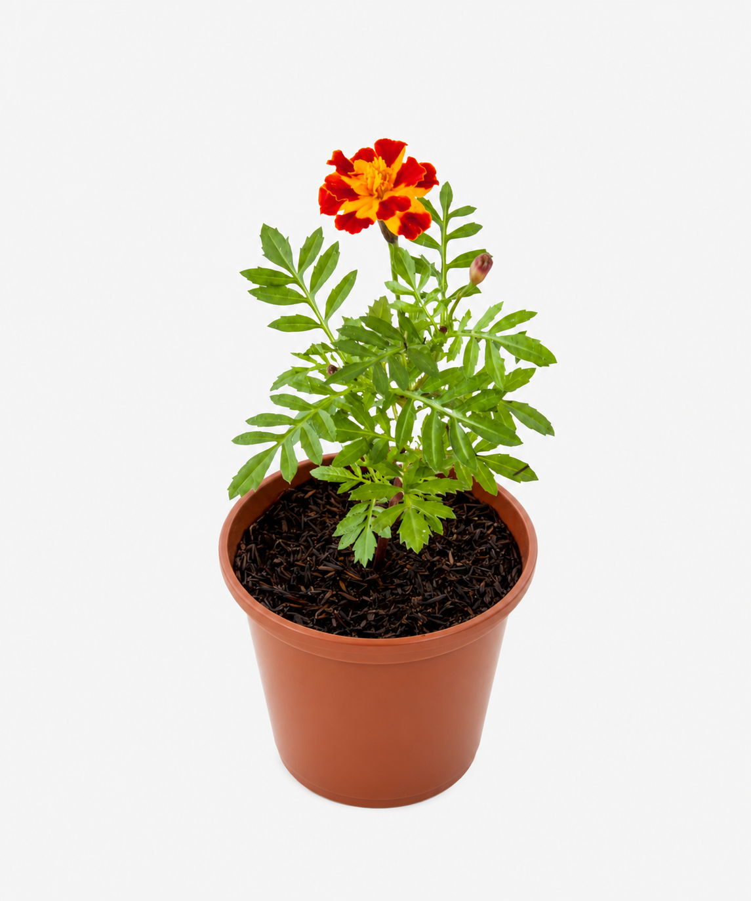

Planta companheira, biodiversidade e manejo sustentável.

O Tagetes, conhecido popularmente como Cravo-de-defunto, é uma flor muito utilizada em jardins e hortas sustentáveis pela sua beleza e importância ecológica.
Na Horta Escolar Viva, essa planta representa a integração entre ornamentação, educação ambiental e práticas de cultivo sustentável.
O Tagetes é considerado uma planta companheira porque pode auxiliar no equilíbrio da horta, contribuindo para um ambiente mais diversificado e saudável.
Suas flores atraem abelhas, borboletas e outros polinizadores, fortalecendo a biodiversidade do jardim sustentável.
Além de suas flores coloridas, o Tagetes é muito valorizado em hortas agroecológicas pela sua relação com o equilíbrio natural do ambiente.